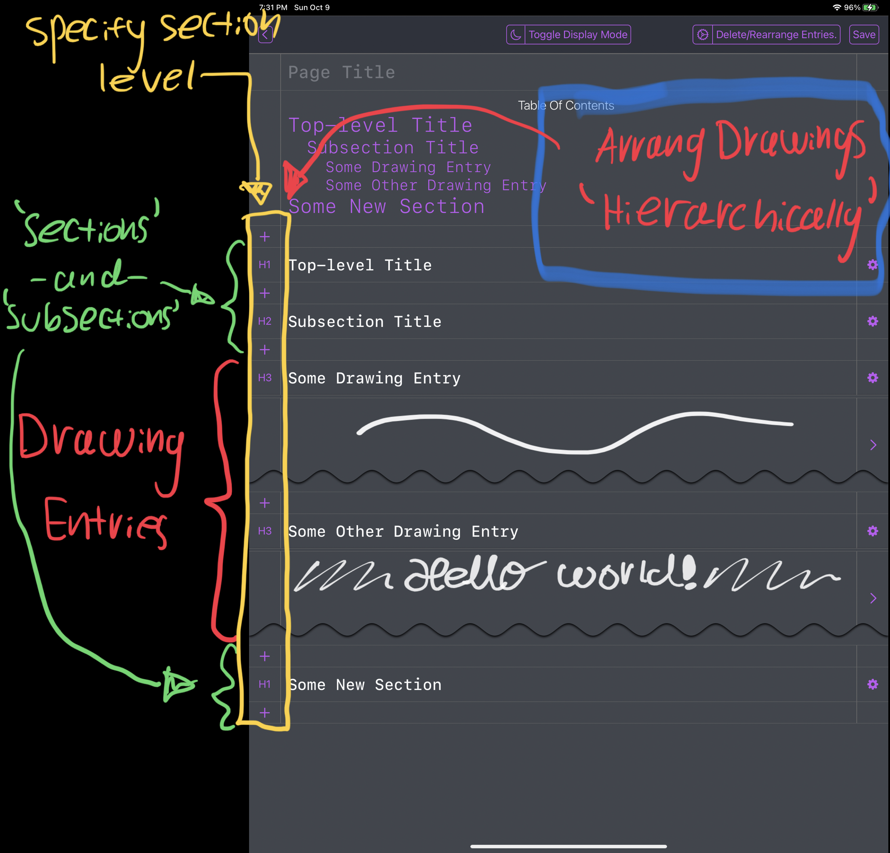
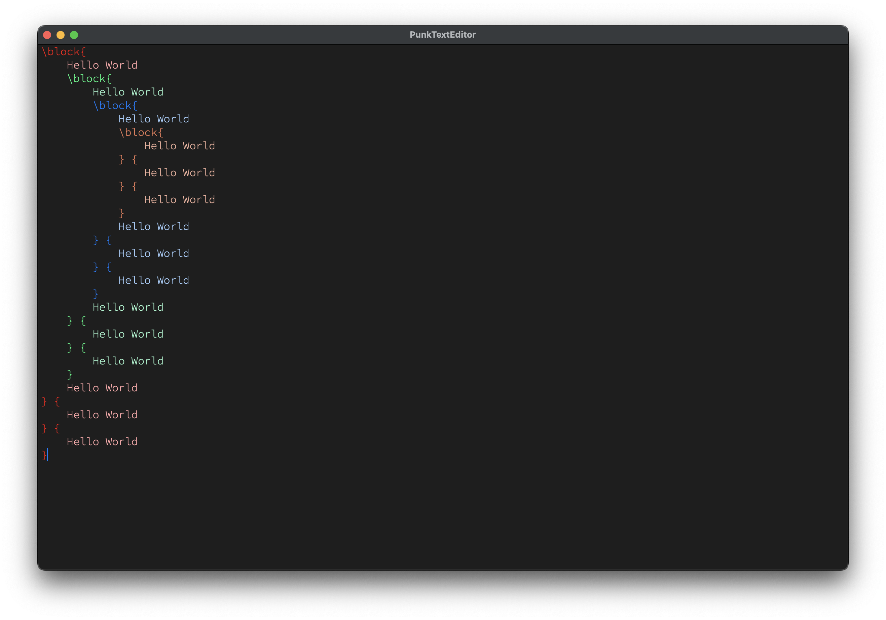
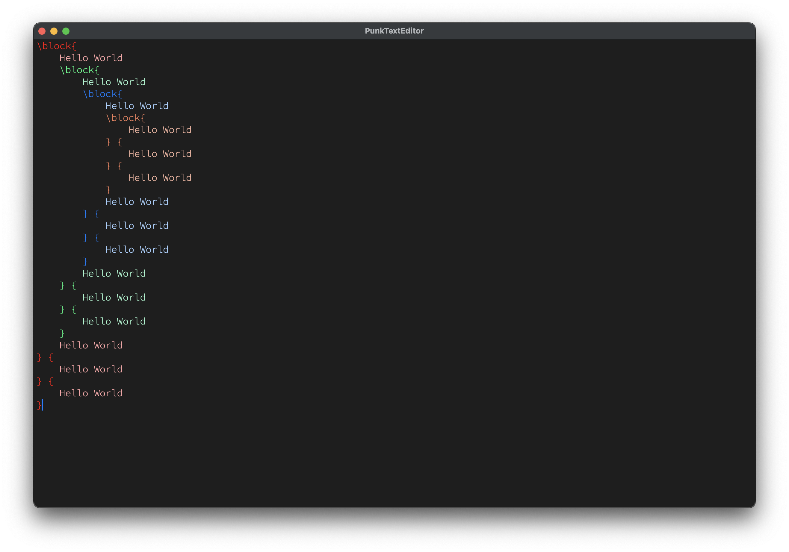
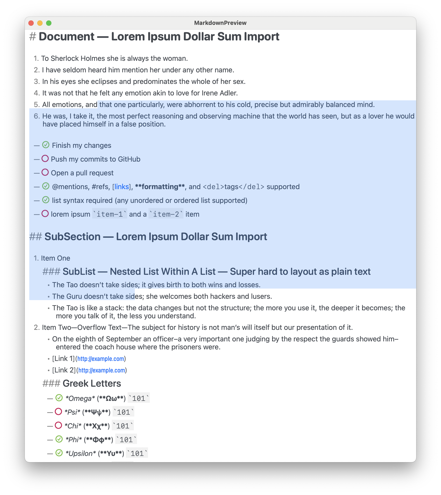
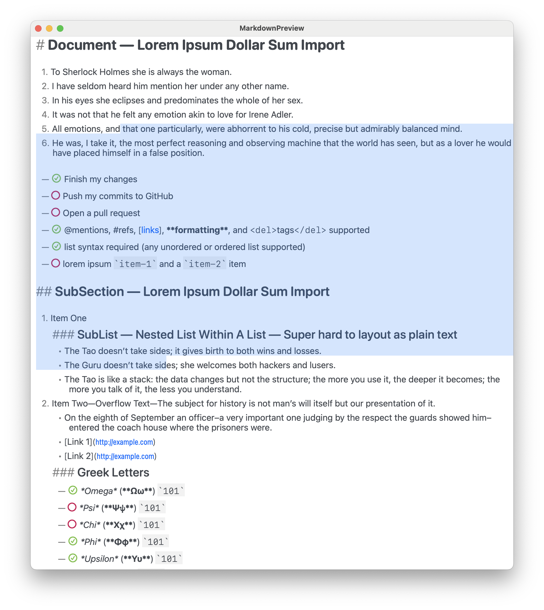

Welcome to the SubScript Note-Taking & Content Publishing Tools
Tools to accommodate my preferred note-taking workflow, from beautifully typeset (but relatively time
consuming) LaTeX math and other markup, to rapid hand drawn notes when time constrained — all in one
and seamlessly intermixed.
Features
Content publishing VIA Web-Technologies!
There are TONS of JS libs that do very specific things (for literally everything) that no-one ever uses
outside perhaps an official web-app, for instance Desmos and GeoGebra are trivially embeddable but people
hardly ever use their JS APIs. The goal of Subscript is to make this as convenient as possible with a
declarative non-programming API for each. Something akin to e.g. exclusively using HTML tags for each in a
declarative manner.
In a certain regard, SubScript is basically LaTeX, except, while you loose out on it's massive array of
packages that do everything from math to extremely fine tuned musical notation rendering, you instead get a WIP
LaTeX-like interface to the COLOSSAL JS ecosystem.
- For instance, need to publish content with musical notation? Maybe I'll one day add support for
VexFlow so I say that Subscript supports rendering complex musical
notation. Can markdown do that? Or better yet, will markdown ever do that?
In 2022 popular markdown displays are finally getting support for displaying math, but it's still relatively
limited with regards to the feature-set LaTeX provides.
The goal of Subscript is to be a monolithic publishing platform for everything under the
sun, and by monolithic, I mean monolithic. While red flags may go off in your head, I've tried AsciiDoc, and
the problem with AsciiDoc is that it's both slow, incredibly slow after a while, and especially, there's no
syntax highlighting or autocomplete of embedded content! In theory AsciiDoc's idea of extensibility sounds
nice, it may please your enterprise system architect, but it leads to a multitude of annoyances (to say the
least) that you simply don't have with LaTeX. Furthermore, AsciiDoc makes assumptions that wouldn't easily
translate to a browser environment. Whereas a monolithic architecture entails end-to-end uniformity.
In theory, Markdown based content publishing tools has the same issue, I've seen platforms built upon
markdown with extra features, but will your stock markdown syntax highlighter support such? Whereas e.g. if you
see a LaTeX package, odds are it supports the entirety of (Xe)LaTeX syntax and whatnot.
Subscript Markup Language
- Built upon LaTeX-ified HTML tags.
- Meta:
- (Except in Subscript, instead of calling things like
\h1{…} a tag, it's a command
(you can go on calling it a tag, idc. Originally, in the compiler implementation I used the tag
terminology for relevant names, but this was later changed without any particular conscious reason,
perhaps's it was just less confusing given it's LaTeX-like syntax, regardless this is what
stuck.)
- Therefore, in Subscript:
- all command identifiers begin with a slash
\ (which is an easy trigger for
auto-complete),
- while macros with specially implemented behavior (in the compiler) end in an exclamation mark
(
!) (inspired by rust).
- A command is broken down into
\name[attributes]{arguments}
- For instance,
\h1{Hello World}\include[src="./path/to/filename.ss"]\layout[cols=3]{…}\frac{1}{2}
- Generally speaking:
- For all HTML based commands, the overall format is
\name[attributes]{argument} or \name[attributes]
- For all LaTeX based commands, the overall format is
\name[attributes]{arg1}{arg2}…{argN}
- Some commands are only available if it's nested under a
parent command, for instance,
\row is only available if it's nested under a \table command. (It's a variable
arity/argument convenience command for creating a table row where each argument is automatically wrapped
in in a table-data element (if its not already), since HTML tables are very verbose and I've been trying
to streamline their creation for fast notes).
- (I call these convenience commands that simply expand out to more verbose HTML trees "HTML
sugar")
- Compile your notes to HTML webpages, or PDF files (very long-term WIP).
- Seamlessly intermix markup with hand drawn content VIA the Subscript Freeform Tools (iPad only).
- Seamless dark/light mode support throughout all subscript tools.
Math Support
| Cmd |
Type |
Notes |
\math{…} |
Math Block |
|
\{…} |
Inline Math |
Due to how frequently it's used, I made it's invocation as short as possible |
\equation{…} |
Math Block |
The default environment is equivalent to LaTeX's equation + split env |
Also the \math command support a few options for quickly defining common environments and
whatnot, as shown in the following example (the num and tag options also work for
\equation):

Which results in:

| Value |
Shorthand |
Notes |
equations |
e |
|
centered |
c |
When I update the \where! macro to support rewriting attributes, you'll be able to use such to
keep track of labels within a local expression. Which will be something akin to:

By default numbered expressions are turned off, because I want a better interface for such than what KaTeX
provides.
Layout
Things can be broken down into newspaper like columns VIA the \layout[col=num] command, for
instance,

By default this also includes breakpoints that will decrement columns as the viewport width decreases until
it breaks into single column mode.
While the \grid command gives you access to very fine tuned CSS grids:

File Import Support With Relative Headings
For example

Furthermore, this rule is recursively applied in a bottom-up fashion when files import other files that
import other files and so forth (I really wish there were more HTML heading tags). So in any .ss
file, always begin with H1 and decrement sub-headings relative to such (so the headings therefrom will result
in the appropriate level in any given hierarchical context of file imports).
Automatic Table Of Content Generation
Currently being reimplemented to better handle multi-page and nested (hierarchical) page layouts.
Currently looks like this (in dark mode):
Unicode Support and Typography:
- The parser is based on the
unicode-segmentation crate (which identifies Grapheme Cluster,
Word and Sentence boundaries according to Unicode Standard Annex #29 rules).
- Unicode beautification of characters such as mapping
"..." → “…”
Local (anonymous) rewrite rules (VIA the \where! macro):

This was initially motivated by the ungodly mess that happened when I tried to color-code a complex bit of
LaTeX math, where the resulting markup thereafter was incredibly hard to read... What I wanted was something
akin to

Update
WARNING: I forgot to include ‘;’ at the end of each rewrite rule! Due to recent changes to
the parser. It should instead look like this:

Integration with hand drawn notes VIA your iPad and Apple Pencil (With Dark/Light Mode Support!)
For rapid note taking and freeform content creation such as diagrams and hand drawn visualizations. Which
the Subscript Markup Language and compiler natively supports for seamless integration into your published
content.


Safe your files to e.g. iCloud Drive and seamlessly include such in your notes

- Freeform files are essentially vector objects and are therefore resolution independent.
- The strokes are rendered into relatively beautiful SVG paths (compared to other implementations out there
that used ugly fixed diameter strokes with hard cutoffs).
- NOTE: It's not yet available on the App Store since dev licenses are expensive (but you don't need a dev
license to compile and run on your own iPad). Although if this project gains traction with users, I may
eventually publish such to the app store...
Each freeform file can contain multiple drawing entries, which can be manipulated & formatted like so (VIA
the \where! macro):

Notes:
- This interface is unstable and likely to change and may currently be broken.
- At the time of this writing, drawing rewrite rules are only supported for
.ss1-drawing
files, since .ss1-composition files are more complicated and I haven't worked out how the
interface should work.
Drawing Editor Overview:

Regarding the pen list:
Foreground pens point downBackground pens point up- The
Foreground/Background feature allows you to underline and highlight things
and have such highlights render ‘underneath’ foreground strokes (it just looks nicer).
Page Layout Editor Overview
Note that the above was produced VIA an older version of the app that e.g. had no support for light/dark
mode.
This feature is specific to the ‘SubscriptComposition’ app.

Real World Example - My old chem notes:
PDF Support WIP:


 


 
